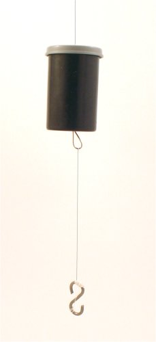
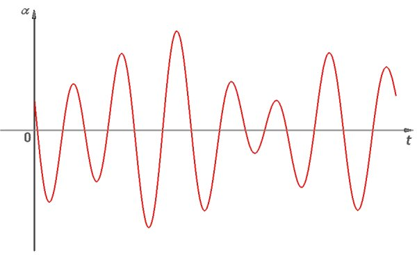
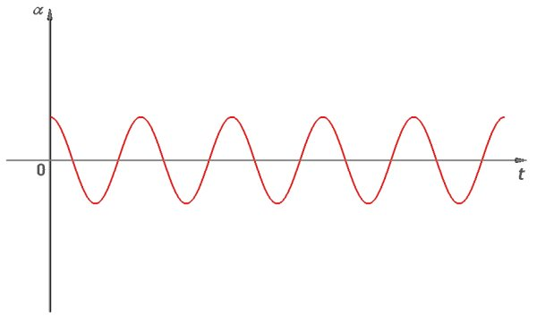

Provocarea 1B2−1
Provocarea 1B2−1
Cum te aştepţi să oscileze doi oscilatori mecanici cuplaţi care au, fiecare în parte, altă perioadă de oscilaţie?
B.2. |
Oscilaţii mecanice forţate |
Pendulele pe care le−ai folosit în activităţile experimentale din secţiunea precedentă aveau aceeaşi lungime şi, în consecinţă, aceeaşi perioadă de oscilaţie.
Provocarea 1B2−1
Cum te aştepţi să oscileze doi oscilatori mecanici cuplaţi care au, fiecare în parte, altă perioadă de oscilaţie?
Ai constatat deja cât de complexe pot fi comportările oscilatorilor cuplaţi. Uneori suntem nevoiţi să obţinem răspunsurile experimentând!
 Activitatea experimentală 1B2−1
Activitatea experimentală 1B2−1
Investighează oscilaţiile a doi oscilatori mecanici cuplaţi, care au, fiecare în parte, altă perioadă de oscilaţie. Lucrează în echipă.
Pasul 1 Scoate firul unui pendul (şi sârma sa de fixare în capacul acestuia) şi fixează−l la partea inferioară a celulalt pendul. Ai obţinut astfel un pendul dublu (figura 1B2−1).
|  | Fig. 1B2-1. Pendul dublu. |
Pasul 2 Umple cu monezi cutia pendulului superior şi lasă doar cârligul să constituie pendulul inferior.
Înfăşoară aţă pe cârligul pendulului inferior, până când acesta are lungimea jumătate din a celuilalt. Astfel, cele două pendule au perioade individuale de oscilaţie semnificativ diferite.
Pasul 3 "Linişteşte" pendulele în poziţia de echilibru (cu ambele fire verticale, în prelungire). Împinge uşor, lateral, pendulul superior şi eliberează−l. Observă ce se întâmplă.
În timpul oscilaţiilor pendulului superior, punctul de suspensie al pendulului inferior se deplasează considerabil. În consecinţă, pendulul inferior este pus rapid în oscilaţie (cele două pendule sunt puternic cuplate).
Oscilaţiile pendulului inferior sunt însă, la început, un "compromis" între oscilaţia în ritmul pendulului superior şi cea în ritmul propriu (figura 1B2−2).

Fig. 1B2-2. Reprezentarea grafică a oscilaţiilor iniţiale ale pendulului inferior.
Oscilaţiile iniţiale ale pendulului inferior sunt clar diferite de cele armonice (sunt anarmonice).
Acest gen de oscilaţii este rezultatul compunerii a două oscilaţii armonice cu perioade diferite (perioadele proprii de oscilaţie ale celor două pendule) şi amplitudini variabile în timp.
Amplitudinea de oscilaţie a pendulului superior (şi a punctului său de suspensie) scade treptat (acesta transferă energie celuilalt pendul), în timp ce amplitudinea de oscilaţie a pendulului inferior creşte (acesta primeşte energie de la celălalt pendul).
După un timp, oscilaţiile pendulului inferior se "limpezesc" (capătă aspectul evident al oscilaţiilor armonice). Aceste oscilaţii au însă perioada de oscilaţie a pendulului superior!
Pendulul inferior este "forţat" să oscileze în ritmul impus de pendulul superior (mult mai masiv).
 Numim oscilaţii forţate oscilaţiile impuse de mediu unui oscilator, cu altă frecvenţă decât cea proprie.
Numim oscilaţii forţate oscilaţiile impuse de mediu unui oscilator, cu altă frecvenţă decât cea proprie.
De aici încolo, pendulul inferior oscilează în ritmul celui superior, în fază cu acesta, ca şi când s−ar fi supus oscilaţiilor care i−au fost impuse (figura 1B2−3).

Fig. 1B2-3. Reprezentarea grafică a oscilaţiilor forţate ale pendulului inferior.
Aşadar, când un sistem este forţat să oscileze în alt ritm decât cel propriu, distingem două etape importante.
Oscilaţiile iniţiale sunt complexe − cei doi oscilatori încearcă fiecare să−şi "impună" propriul ritm de oscilaţie (figura 1B2−2). Această etapă este numită regim tranzitoriu.
După un timp suficient de lung, care depinde de tăria cuplajului dinte oscilatori şi masele acestora, oscilaţiile sistemului mai puţin masiv vor fi în ritmul şi în faza celor impuse de sistemul mult mai masiv. Această etapă este numită regim permanent (figura 1B2−3).
Există aşadar posibilitatea de a "forţa" un oscilator să oscileze exact aşa cum dorim (nu aşa cum ar oscila acesta dacă ar fi liber), cu condiţia să depăşim regimul tranzitoriu şi să aşteptăm instaurarea regimului permanent.